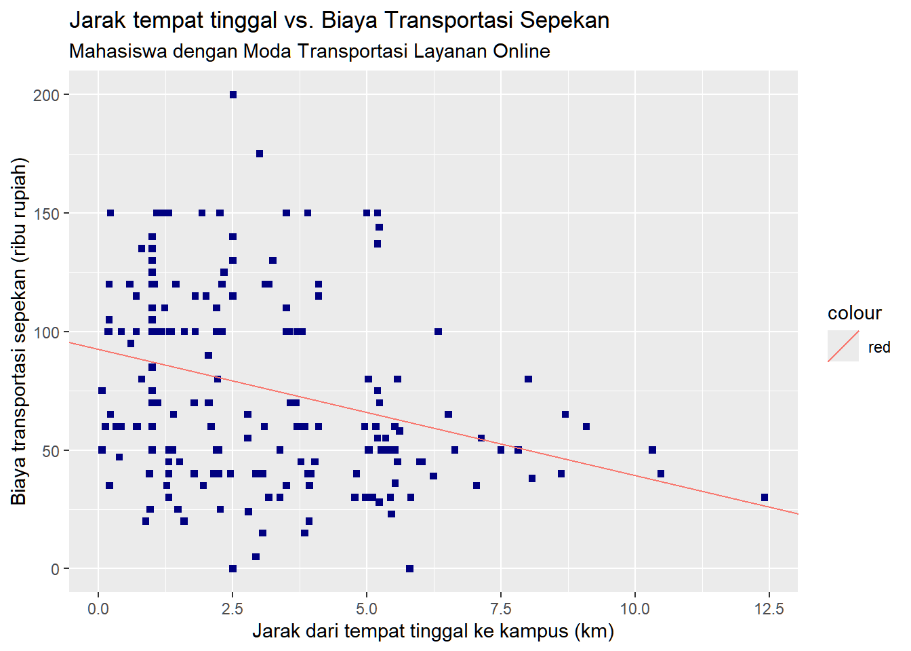

Modul 9 Analisis Hubungan Kausalitas: Regresi Linear Sederhana dan Berganda
Setelah mempelajari modul ini, Anda diharapkan dapat:
- mampu menghasilkan regresi linear sederhana dengan perangkat lunak komputer STP-13.3
- mampu menghasilkan persamaan regresi linear berganda dengan perangkat lunak komputer STP-14.3
9.1 Pendahuluan
Analisis regresi linear adalah analisis statistik untuk menyatakan hubungan sebab-akibat (kausalitas) antar minimal dua variabel. Analisis regresi linear yang melibatkan dua variabel saja (satu variabel dependen dan satu variabel independen), kita sebut sebagai regresi linear sederhana, sedangkan analisis regresi linar yang melibatkan lebih dari dua variabel (satu variabel dependen dan lebih dari satu variabel independen) kita sebut sebagai regresi linear berganda (multiple linear regression)
Analisis regresi linear mewajibkan tingkat pengukuran minimal untuk variabel dependennya adalah metrik. Sementara itu, variabel independennya dapat berupa metrik atau bukan (ordinal/nominal).
Analisis regresi linear menghasilkan persamaan yang disebut persamaan regresi linear. Bentuk umum persamaan regresi linear tersebut adalah sebagai berikut.
\[ y = β_0 + β_1x \]
dengan
- \(y\) adalah variabel dependen (disebut juga variabel respons atau predicted variable)
- \(x\) adalah variabel independen (disebut juga variabel eksplanatory atau predictor variable)
- \(\beta_0\) adalah konstanta yang menjadi intercept, yaitu nilai \(y\) ketika \(x=0\)
- \(\beta_1\) adalah koefisien yang menyatakan seberapa besar perubahan \(y\) ketika satu unit nilai \(x\) berubah.
Persamaan regresi linear di atas adalah untuk analisis regresi linear sederhana, yakni analisis regresi linear yang melibatkan dua variabel saja. Untuk regresi linear berganda, kita hanya perlu menambahkan pasangan \(\beta\) dan \(x\) lainnya, sehingga bentuk umum untuk persamaan regresi linear berganda adalah seperti berikut.
\[ y = β_0 + β_1x_1 + β_2x_2 + ... + β_kx_k \]
dengan
- \(x_k\) adalah variabel independen ke-\(k\)
- \(\beta_k\) adalah koefisien untuk variabel independen ke-\(k\) tersebut
9.2 Penjelasan Kasus
Dalam praktikum kali ini, kita akan memodelkan hubungan kausal antara dua variabel metrik: jarak tempat tinggal ke kampus dan biaya perjalanan sepekan untuk mahasiswa-mahasiswi yang menggunakan kendaraan layanan online saja. Harga perjalanan menggunakan layanan online tentunya dipengaruhi oleh jarak tempuh kendaraan tersebut. Hubungan kausal ini menjadi kasus untuk regresi linear sederhana.
Untuk regresi linear berganda, kita akan melibatkan satu variabel tambahan sebagai variabel independen, yakni variabel berjenis kategoris , sehingga kita memiliki total variabel sejumlah 3 buah (1 variabel dependen, 2 variabel independen).
9.3 Memuat Pustaka (Libraries) yang Diperlukan
Seperti biasa, kita perlu memuat pustaka (libraries) yang diperlukan dalam pengolahan data kita. Seperti halnya juga analisis korelasi variabel metrik, kita tidak lagi menggunakan tabel silang, tetapi kita langsung menganalisis kolom-kolom yang ada di dataset kita.
9.4 Memuat Dataset
Kita akan menggunakan dataset keempat kampus di Kota Bandar Lampung dan sekitarnya sebagai bahan. Kemudian kita akan menyaring objek-objek yang memiliki nilai variabel kendaraan utama sama dengan 'Layanan online'.
9.5 Pola Hubungan Data
Sebagai pendahuluan, kita akan mengidentifikasi kekuatan, arah, dan pola hubungan antara variabel dependen dan independen kita (biaya perjalanan sepekan dan jarak tempat tinggal-kampus). Untuk itu kita dapat menghitung koefisien korelasi untuk hubungan variabel metrik juga, yakni koefisien korelasi Pearson’s \(r\).
Pola hubungan akan kita analisis dengan membuat diagram pencar (scatter plot) antara variabel dependen dengan variabel independennya.
Menghitung Koefisien Pearson’s \(r\)
Menghitung koefisien korelasi Pearson’s \(r\) dapat kita lakukan dengan perintah cor() dengan atribut method = "pearson" setelah terlebih dahulu menyimpan nilai masing-masing variabel ke dalam suatu vektor.
# Menyimpan vektor jarak dan biaya (perjalanan) sepekan ke dalam variabel
# 'x' dan 'y'
x <- data_mahasiswa_online$jarak
y <- data_mahasiswa_online$`biaya sepekan`
cor(x, y, use = "complete.obs", method = "pearson")## [1] -0.1813941Jawablah: Tuliskan interpretasi kalian terhadap koefisien korelasi antara variabel jarak tempuh dengan biaya perjalanan sepekan.
Petunjuk: ulas kekuatan serta arah hubungannya serta maknai secara kontekstual ulasan tersebut
Membuat Diagram Pencar
Membuat diagram pencar dapat dilakukan dengan menerapkan perintah geom_point() dari pustaka ggplot2 yang dimuat bersama pustaka tidyverse.
# Membuat diagram pencar antara variabel jarak dan biaya transportasi sepekan
# untuk mahasiswa yang pakai layanan online
scp <- ggplot(
data = data_mahasiswa_online,
mapping = aes(
x = jarak, # variabel di sumbu X
y = `biaya sepekan`
)
) + # variabel di sumbu Y
geom_point(
color = "navy", # perintah untuk menampilkan diagram pencar dengan warna biru
size = 1.5, # mengatur ukuran titik
shape = 15
) + # mengatur bentuk titik menjadi persegi
labs(
title = "Jarak tempat tinggal vs. Biaya Transportasi Sepekan",
subtitle = "Mahasiswa dengan Moda Transportasi Layanan Online",
y = "Biaya transportasi sepekan (ribu rupiah)",
x = "Jarak dari tempat tinggal ke kampus (km)"
)
# Menampilkan diagram
scp
Setelah Anda melakukan pembuatan diagram pencar tersebut, Anda akan menyadari bahwa kita memiliki outlier (pencilan), yakni objek yang memiliki nilai jarak dari tempat tinggal ke kampus mencapai hampir 25 km.
Keberadaan pencilan ini akan mengganggu hasil analisis kita. Mari kita buktikan dengan menghilangkan data pencilan tersebut.
# Menghilangkan observasi pencilan dengan menyaring observasi dengan
# jarak < 15 km
data_mahasiswa_online <- data_mahasiswa_online |>
filter(jarak < 15)Di sini kita akan menghitung ulang nilai koefisien korelasi kita.
# Menghitung korelasi antara biaya sepekan dengan jarak dari dataset yang
# sudah dihilangkan pencilannya
x <- data_mahasiswa_online$jarak
y <- data_mahasiswa_online$`biaya sepekan`
cor(x, y, method = "pearson")## [1] -0.3086803Jawablah: Bagaimana perbedaan nilai koefisiennya?
Kita pun dapat memeriksa hasil perbaikan dataset kita dari diagram pencar yang baru berikut.
# Membuat diagram pencar antara variabel jarak dan biaya transportasi sepekan
# untuk mahasiswa yang pakai layanan online, setelah pencilan dihilangkan
scp <- ggplot(
data = data_mahasiswa_online,
mapping = aes(
x = jarak, # variabel di sumbu X
y = `biaya sepekan`
)
) + # variabel di sumbu Y
geom_point(
color = "navy", # perintah untuk menampilkan diagram pencar
size = 1.5, # mengatur ukuran titik
shape = 15
) + # mengatur bentuk titik menjadi persegi
labs(
title = "Jarak tempat tinggal vs. Biaya Transportasi Sepekan",
subtitle = "Mahasiswa dengan Moda Transportasi Layanan Online",
y = "Biaya transportasi sepekan (ribu rupiah)",
x = "Jarak dari tempat tinggal ke kampus (km)"
)
# Menampilkan diagram yang baru
scp
9.6 Model Regresi Linear Sederhana
Dalam bagian ini kita akan mempelajari cara menyusun, menampilkan, menafsirkan/menginterpretasi, dan memprediksi nilai variabel dependen berdasarkan model yang kita susun.
9.6.1 Penyusunan Model
Untuk membuat persamaan model regresi linear, kita akan menggunakan perintah lm yang sudah disediakan secara bawaan oleh R. Hasil dari perintah ini dapat kita simpan sebagai variabel tertentu.
# Membuat model regresi linear
model <- lm(y ~ x, data = data_mahasiswa_online)Argumen yang kita gunakan adalah var_dependen ~ var_independen serta nama dataset yang kita gunakan. Tanda ~ (disebut tilde) dapat kita masukkan dengan menekan Shift + ` yang ada di sebelah kiri tombol angka 1 di keyboard kita.
Sebelumnya kita sudah mendefinisikan y dan x sebagai variabel untuk vektor biaya transportasi sepekan dan vektor jarak, sehingga kita bisa langsung menggunakannya di atas. Dataset yang kita gunakan adalah dataset mahasiswa yang menggunakan layanan online sebagai moda transportasi utama yang kita simpan dalam data_mahasiswa_online.
9.6.2 Penampilan Model
Untuk menampilkan hasil penyusunan model regresi linear, kita akan menggunakan perintah summary yang juga sudah disediakan secara bawaan oleh R.
# Menampilkan hasil model regresi linear
summary(model)##
## Call:
## lm(formula = y ~ x, data = data_mahasiswa_online)
##
## Residuals:
## Min 1Q Median 3Q Max
## -79.255 -30.717 -3.562 26.758 120.787
##
## Coefficients:
## Estimate Std. Error t value Pr(>|t|)
## (Intercept) 92.557 4.598 20.129 < 2e-16 ***
## x -5.321 1.205 -4.414 1.72e-05 ***
## ---
## Signif. codes: 0 '***' 0.001 '**' 0.01 '*' 0.05 '.' 0.1 ' ' 1
##
## Residual standard error: 38.11 on 185 degrees of freedom
## Multiple R-squared: 0.09528, Adjusted R-squared: 0.09039
## F-statistic: 19.48 on 1 and 185 DF, p-value: 1.721e-05Yang ditampilkan dengan perintah tersebut antara lain adalah sebagai berikut. Penjelasan lebih lanjutnya akan diberikan di subbagian selanjutnya.
Call: bentuk persamaan model yang sudah kita input sebelumnyaResiduals: informasi residual modelCoefficients: tabel yang menunjukkan angka-angka dalam persamaan model yang dihasilkanNilai-nilai uji kualitas model seperti
Residual standard error(standard error estimasi), Multiple R-squared dan Adjusted R-squared (koefisien determinasi), serta F-statistic (uji signifikansi model).
Selain menggunakan summary, kita juga dapat menggunakan perintah tbl_regression, perintah yang disediakan oleh paket/library gtsummary. Hasil dari perintah ini adalah tabel yang sudah diformat sesuai dengan templat artikel ilmiah.
# Menampilkan hasil model regresi linear dengan tbl_regression
tbl_regression(model)| Characteristic | Beta | 95% CI | p-value |
|---|---|---|---|
| x | -5.3 | -7.7, -2.9 | <0.001 |
| Abbreviation: CI = Confidence Interval | |||
Jika kalian menemukan pertanyaan untuk menginstal sebuah paket di console, yakni broom.helpers, pilih saja “Yes” untuk mengunduh dan menginstalnya.
Secara bawaan, tabel tidak menampilkan nilai konstanta (intercept), menampilkan nilai confidence level 95%, dan menampilkan nilai dari variabel independen sesuai variabel yang kita tetapkan sebelumnya, dalam hal ini adalah x. Untuk menggantinya, kita dapat melakukan penyesuaian perintah sebagai berikut.
tbl_regression(
model,
intercept = TRUE, # mengatur intercept-nya ditampilkan
conf.level = 0.99, # mengatur nilai confidence level menjadi 99%
label = list(x ~ "Jarak tempuh ke kampus, km") # Mengganti tulisan "x" saja menjadi yang
) # lebih bermakna| Characteristic | Beta | 99% CI | p-value |
|---|---|---|---|
| (Intercept) | 93 | 81, 105 | <0.001 |
| Jarak tempuh ke kampus, km | -5.3 | -8.5, -2.2 | <0.001 |
| Abbreviation: CI = Confidence Interval | |||
9.6.3 Penafsiran/interpretasi Model
Yang kita akan tafsirkan dari model kita di antaranya adalah:
persamaan model
makna nilai konstanta dan koefisien
uji kualitas model (ANOVA,
F-statistic)uji kualitas variabel (
Pr(>|t|))
9.6.3.1 Tafsiran persamaan model
Persamaan model dapat kita tafsirkan berdasarkan keluaran dari summary berupa Coefficients atau hasil dari tbl_regression milik gtsummary.
Berdasarkan keluaran kedua perintah tersebut, kita dapat mengetahui bagaimana persamaan regresi linearnya dengan mengganti bentuk umum persamaan regresi linear dengan angka-angka yang dihasilkan di model.
Bentuk umum:
\[ y = β_0 + β_1x \]
Dengan mengambil hasil dari summary(model), kita dapat menuliskan persamaan regresi linear kita menjadi:
\[ y = 93 - 5,3x \]
Dari persamaan model ini kita dapat menggambar garis yang melewati titik-titik data kita. Ini merupakan persamaan garis terbaik dari seluruh kemungkinan persamaan garis yang ada, yang kita tentukan dengan meminimalkan kuadrat terkecil.
# Membuat diagram pencar antara variabel jarak dan biaya transportasi sepekan
# untuk mahasiswa yang pakai layanan online, setelah pencilan dihilangkan,
# ditambah garis dari persamaan regresi
scp <- ggplot(
data = data_mahasiswa_online,
mapping = aes(
x = jarak, # variabel di sumbu X
y = `biaya sepekan`
)
) + # variabel di sumbu Y
geom_point(
color = "navy",
size = 1.5,
shape = 15
) +
geom_abline(aes(
intercept = coef(model)[1],
slope = coef(model)[2],
color = "red"
)) +
labs(
title = "Jarak tempat tinggal vs. Biaya Transportasi Sepekan",
subtitle = "Mahasiswa dengan Moda Transportasi Layanan Online",
y = "Biaya transportasi sepekan (ribu rupiah)",
x = "Jarak dari tempat tinggal ke kampus (km)"
)
# Menampilkan diagram pencar
scp
coef(model)[1]mengacu pada keluaran fungsicoefdari variabelmodelkita yang pertama ([1]), yakni angka intercept/konstantanya. Ini menjadi nilai dari atributinterceptyang terletak dalam fungsigeom_ablinecoef(model)[2]mengacu pada keluaran fungsicoefdari variabelmodelkita yang kedua ([2]), yakni angka koefisien variabel independen kita. Ini menjadi nilai dari atributslopeyang terletak dalam fungsigeom_ablinekarena nilai koefisien variabel independen menunjukkan kemiringan garis persamaan regresi linear kita
Persamaan model dapat kita tafsirkan berdasarkan keluaran dari summary berupa Coefficients atau hasil dari tbl_regression milik gtsummary.
Berdasarkan keluaran kedua perintah tersebut, kita dapat mengetahui bagaimana persamaan regresi linearnya dengan mengganti bentuk umum persamaan regresi linear dengan angka-angka yang dihasilkan di model.
Bentuk umum:
\[ y = β_0 + β_1x \]
Dengan mengambil hasil dari summary(model), kita dapat menuliskan persamaan regresi linear kita menjadi:
\[ y = 93 - 5,3x \]
Dari persamaan model ini kita dapat menggambar garis yang melewati titik-titik data kita. Ini merupakan persamaan garis terbaik dari seluruh kemungkinan persamaan garis yang ada, yang kita tentukan dengan meminimalkan kuadrat terkecil.
# Membuat diagram pencar antara variabel jarak dan biaya transportasi sepekan
# untuk mahasiswa yang pakai layanan online, setelah pencilan dihilangkan,
# ditambah garis dari persamaan regresi
scp <- ggplot(
data = data_mahasiswa_online,
mapping = aes(
x = jarak, # variabel di sumbu X
y = `biaya sepekan`
)
) + # variabel di sumbu Y
geom_point(
color = "navy",
size = 1.5,
shape = 15
) +
geom_abline(aes(
intercept = coef(model)[1],
slope = coef(model)[2],
color = "red"
)) +
labs(
title = "Jarak tempat tinggal vs. Biaya Transportasi Sepekan",
subtitle = "Mahasiswa dengan Moda Transportasi Layanan Online",
y = "Biaya transportasi sepekan (ribu rupiah)",
x = "Jarak dari tempat tinggal ke kampus (km)"
)
# Menampilkan diagram pencar
scp
coef(model)[1]mengacu pada keluaran fungsicoefdari variabelmodelkita yang pertama ([1]), yakni angka intercept/konstantanya. Ini menjadi nilai dari atributinterceptyang terletak dalam fungsigeom_ablinecoef(model)[2]mengacu pada keluaran fungsicoefdari variabelmodelkita yang kedua ([2]), yakni angka koefisien variabel independen kita. Ini menjadi nilai dari atributslopeyang terletak dalam fungsigeom_ablinekarena nilai koefisien variabel independen menunjukkan kemiringan garis persamaan regresi linear kita
9.6.3.2 Tafsiran nilai konstanta dan koefisien
Persamaan regresi linear ini bermakna nilai konstanta sebesar 93 berarti bahwa dengan tinggal di kampus (\(x=0\)), mahasiswa masih akan mengeluarkan biaya sebesar 93.000 rupiah (ingat bahwa variabel biaya sepekan menggunakan satuan ribuan rupiah) untuk mengakses kampus selama sepekan. Kita bisa pahami hal tersebut sebagai perkiraan harga sewa penginapan di kampus.
Sementara itu, nilai koefisien sebesar \(-5,3\) berarti bahwa penambahan jarak sebesar 1 km akan mengurangi biaya transportasi sepekan sebesar 5.300 rupiah. Artinya, makin jauh 1 km seorang mahasiswa tinggal dari kampus, makin kecil pula biaya transportasi sepekannya sebesar 5.300 rupiah.
Pertanyaan bonus: Mengapa mahasiswa yang tinggal lebih jauh dari kampus biaya perjalanan sepekannya lebih kecil? Bukankah biaya transportasi makin jauh malah makin mahal?
9.6.3.3 Tafsiran uji kualitas model
Uji kualitas model kita terdiri atas standard error dari residual, koefisien determinasi atau \(R^2\), dan uji signifikansi persamaan menggunakan statistik \(F\) (F-statistic) yang merupakan hasil ANOVA (analysis of variance).
-
Standard error dari residual mencerminkan rata-rata galat (residu), yaitu selisih nilai variabel dependen yang dihitung (biaya perjalanan sepekan hasil prediksi dari model) dengan nilai variabel dependen yang kita peroleh dari data.
- Hasil
summarymenunjukkan angka 38,11 yang artinya rata-rata kesalahan prediksi dari model kita adalah sebesar 38.110 rupiah.
- Hasil
-
Koefisien determinasi atau \(R^2\) menyatakan kesesuaian (fit) dari model kita, yakni seberapa banyak proporsi variansi data variabel dependen kita (biaya perjalanan sepekan) dijelaskan oleh variabel independennya (jarak dari kampus ke tempat tinggal).
Sisa dari angka \(R^2\) ini adalah banyak variansi yang tidak dijelaskan oleh variabel independen, artinya dijelaskan oleh variabel lainnya yang tidak ada dalam model dan juga keacakan (misal dalam pengambilan data atau kejadian acak).
Hasil
summarymenunjukkan angka 0,095 yang berarti hanya 9,5% variansi biaya perjalanan sepekan dijelaskan oleh variansi jarak perjalanan ke kampus.Makin tinggi nilai \(R^2\) dari model kita, makin besar proporsi variansi variabel dependen kita dijelaskan oleh variabel independennya.
Hal ini menunjukkan bahwa pengaruh dari variabel independen kita terhadap variabel dependennya kuat
-
Koefisien uji signifikansi (\(F\)) (
F-statistics) adalah uji hipotesis ANOVA (analysis of variance) yang membuktikan hipotesis nol bahwa tidak ada hubungan antara variabel dependen dengan variabel independen yang kita modelkan. Penerimaan hipotesis nol ini ditandai dari nilai signifikansi (p-value) yang lebih kecil dari 5% (0.05).Hasil
summarymenunjukkan bahwa nilaip-valuekita adalah1,721e-05. Angka tersebut menyatakan notasi ilmiah \(1,721\times10^{-5}\) yang berarti bahwa nilaip-valuekita sangat-sangat lebih kecil dari0.05.Ini artinya kita tidak dapat menerima hipotesis nol kita yang menyatakan tidak ada hubungan antara variabel biaya perjalanan sepekan (variabel dependen) dengan variabel jarak tempuh ke kampus (variabel independen).
Simpulan tafsiran kualitas model: kita sudah melihat bahwa hubungan kausal antara variabel jarak ke kampus terhadap biaya perjalanan sepekan adalah terbalik dengan besar kemiringan 5,3. Hubungan kausal tersebut benar-benar ada berdasarkan hasil dari koefisien uji signifikansi (ANOVA) yang p-value-nya <0,05. Akan tetapi, hubungan tersebut tidak cukup kuat karena nilai koefisien determinasi yang kecil, yakni hanya 9% saja.
9.6.3.4 Tafsiran uji kualitas variabel
Uji kualitas variabel adalah pengujian terhadap signifikansi atau kepentingan variabel independen kita. Hasil pengujian ini diperlihatkan oleh angka p-value dari uji t (t value)-nya, yakni yang ada di kolom Pr(>|t|).
Apabila nilai Pr(>|t|) kita >0,05 maka variabel independen kita dianggap tidak signifikan, karena artinya nilai koefisien yang ada di kolom Estimate sebenarnya adalah nol sehingga bisa dikeluarkan dari persamaan regresi linear.
Sebaliknya, jika nilai Pr(>|t|) kita <0,05 maka variabel independen kita dianggap signifikan, artinya nilai koefisien yang ada di kolom Estimate sebenarnya adalah nilai koefisien tersebut.
Nilai Pr(>|t|) variabel x adalah 1,721e-05 yang berarti koefisien senilai -5.321 adalah signifikan.
9.6.4 Melakukan Prediksi
Kita melakukan prediksi dengan menggunakan perintah predict. Misalkan kita ingin melakukan prediksi biaya perjalanan sepekan untuk mahasiswa yang tinggal di jarak 90 dan 120 km dari kampus
## 1 2
## -386.3117 -545.9345Perintah
tibbleadalah perintah untuk membuat dataset berisi kolomxyang terdiri atas 2 nilai: 90 km dan 120 km. Kita menyimpan dataset contoh tersebut ke dalam variabel bernamabahan_predDalam membuat dataset untuk prediksi kita harus memperhatikan nama variabel/nama kolom yang kita berikan dalam perintah
tibble. Nama kolom yang akan kita prediksi harus sama persis dengan nama variabel yang kita nyatakan dalam perintahlm.
9.7 Model Regresi Linear Berganda
Dalam bagian ini kita hanya akan mempelajari penggunaan variabel dummy untuk meningkatkan kekuatan prediksi kita. Di akhir, Anda akan menafsirkan hal-hal yang sudah Anda pelajari pada bagian regresi linear.
Kita akan menggunakan variabel jenis tempat tinggal untuk variabel dummy. Pertama, kita akan mengatur jenis nilai pada kolom jenis tempat tinggal menggunakan perintah factor.
# Membuat nilai kolom menjadi variabel kategoris dengan 'factor'
data_mahasiswa_online$`jenis tempat tinggal` <- factor(data_mahasiswa_online$`jenis tempat tinggal`)Kedua, kita akan membuat model seperti halnya yang kita lakukan dalam analisis regresi linear sederhana. Kita akan menggunakan nama yang lebih representatif.
# Membuat variabel-variabel
jarak <- x # variabel 'x' saja diubah menjadi 'jarak'
biaya <- y # variabel 'y' saja diubah menjadi 'biaya'
ling <- data_mahasiswa_online$`jenis tempat tinggal` # tempat tinggal diberi
# nama 'ling'
# Menyatakan model
mdl <- lm(biaya ~ jarak + ling, data = data_mahasiswa_online)
# Melihat hasil pemodelan
summary(mdl)##
## Call:
## lm(formula = biaya ~ jarak + ling, data = data_mahasiswa_online)
##
## Residuals:
## Min 1Q Median 3Q Max
## -73.743 -23.421 -2.143 19.424 114.322
##
## Coefficients:
## Estimate Std. Error t value Pr(>|t|)
## (Intercept) 98.103 8.104 12.105 < 2e-16 ***
## jarak -4.954 1.118 -4.431 1.63e-05 ***
## lingKos sendiri -20.779 8.787 -2.365 0.0191 *
## lingRumah mengontrak bersama -17.198 10.409 -1.652 0.1002
## lingRumah mengontrak pribadi 27.744 16.031 1.731 0.0852 .
## lingRumah pribadi 20.348 9.866 2.062 0.0406 *
## lingRumah saudara 10.365 12.689 0.817 0.4151
## ---
## Signif. codes: 0 '***' 0.001 '**' 0.01 '*' 0.05 '.' 0.1 ' ' 1
##
## Residual standard error: 34.23 on 180 degrees of freedom
## Multiple R-squared: 0.2899, Adjusted R-squared: 0.2663
## F-statistic: 12.25 on 6 and 180 DF, p-value: 1.538e-11Selanjutnya, kita akan menafsirkan hasil dari summary model ini.
9.7.1 Penjelasan Variabel Dummy
Dalam persamaan model kita tersebut, variabel ling atau jenis tempat tinggal diubah menjadi variabel dummy :
-
lingKos sendiri, -
lingRumah mengontrak bersama, -
lingRumah mengontrak pribadi, -
lingRumah pribadi, dan -
lingRumah saudara.
Nama variabel-variabel tersebut tak lain adalah gabungan kata ling dengan tiap-tiap kategori dalam variabel jenis tempat tinggal.
Perhatikan bahwa kita jadi memiliki 5 variabel dummy dari satu variabel kategoris jenis tempat tinggal yang terdiri atas 6 kategori nilai: “Kos bersama-sama”, “Kos sendiri”, “Rumah mengontrak bersama”, “Rumah mengontrak pribadi”, “Rumah pribadi”, dan “Rumah saudara.”
Variabel dummy adalah variabel yang bernilai 0 (nol) atau 1 (satu) saja. Nol artinya variabel dummy tersebut bernilai “salah” atau “tidak”, sedangkan satu artinya variabel dummy tersebut bernilai “benar” atau “ya.”
Variabel-variabel dummy yang 5 buah ini hanya akan bernilai 1 atau 0 sesuai dengan kategori dari variabel jenis tempat tinggal suatu objek. Perhatikan bahwa kita tidak punya “lingKos sendiri” dalam variabel dummy kita. Ini artinya apabila kategori jenis tempat tinggal suatu objek adalah “Kos sendiri”, kelima variabel dummy akan bernilai 0.
Tabel berikut merangkum nilai-nilai variabel dummy untuk setiap kategori nilai variabel jenis tempat tinggal.
| Kategori | lingKos sendiri |
lingRumah mengontrak bersama |
lingRumah mengontrak pribadi |
lingRumah pribadi |
lingRumah saudara |
|---|---|---|---|---|---|
| Kos sendiri | 1 | 0 | 0 | 0 | 0 |
| Rumah mengontrak bersama | 0 | 1 | 0 | 0 | 0 |
| Rumah mengontrak pribadi | 0 | 0 | 1 | 0 | 0 |
| Rumah pribadi | 0 | 0 | 0 | 1 | 0 |
| Rumah saudara | 0 | 0 | 0 | 0 | 1 |
| Kos bersama | 0 | 0 | 0 | 0 | 0 |
9.7.2 Interpretasi Variabel Dummy
Dalam menginterpretasi variable dummy kita tidak bisa menggunakan Pr(>|t|) semata, karena variabel dummy pada hakikatnya sepaket. Jadi, walaupun nilai Pr(>|t|) sebuah variabel dummy adalah >0,05 ia akan tetap berada dalam persamaan regresi linear.
Interpretasi koefisien variabel dummy adalah dengan memahami bahwa nilai variabel dependen berubah sesuai nilai koefisien apabila variabel dummy tersebut bernilai benar atau 1. Artinya, jika mahasiswa tinggal di kosan sendirian (lingKos sendiri = 1), maka biaya transportasi sepekan berkurang sebesar 20.779 yang juga berarti sebesar 20,7 ribu rupiah. Jika mahasiswa tinggal di rumah pribadi (lingRumah pribadi = 1) maka biaya transportasi sepekan bertambah sebesar 20.348 atau 20,3 ribu rupiah.
9.7.3 Prediksi Model
Dari persamaan model regresi linear kita, kita juga dapat memprediksi nilai biaya perjalanan sepekan untuk mahasiswa-mahasiswa dengan kondisi lain. Misalnya kita ingin memprediksi biaya sepekan transportasi mahasiswa yang tinggal di Rumah saudara berjarak 7,9 km dari kampus dan di Rumah kontrakan bersama yang berjarak 10 km dari kampus.
# Menyusun dataset untuk diprediksi
mhs <- tibble(
jarak = c(7.9, 10),
ling = c("Rumah saudara", "Rumah mengontrak bersama")
)
# melihat hasil prediksi
predict(mdl, mhs)## 1 2
## 69.33008 31.36362Jawablah:
- Bagaimana persamaan model regresi linear berganda kita?
- Tafsirlah kualitas model kita, mulai uji kualitas model (\(F\)), \(R^2\), serta uji kualitas setiap variabel
- Apa saja yang meningkatkan dan menurunkan biaya perjalanan sepekan mahasiswa?
Aktivitas Mandiri 4: Analisis Regresi Komprehensif [STP-13.3, STP-14.3].{capaian}
A. Regresi Linear Sederhana [STP-13.3]:
Model: jumlah perjalanan weekdays vs jarak
1. Buat model sederhana
2. Tuliskan persamaan regresi
3. Interpretasikan intercept dan slope
4. Uji kualitas model (F-statistic, R²)
B. Regresi Linear Berganda [STP-14.3]:
Model: jumlah perjalanan weekdays ~ jarak + umur + jenis tempat tinggal
1. Buat model berganda
2. Tuliskan persamaan lengkap
3. Identifikasi variabel signifikan
4. Bandingkan R²
C. Interpretasi: - Faktor yang meningkatkan/menurunkan jumlah perjalanan? - Proporsi variansi yang dijelaskan?